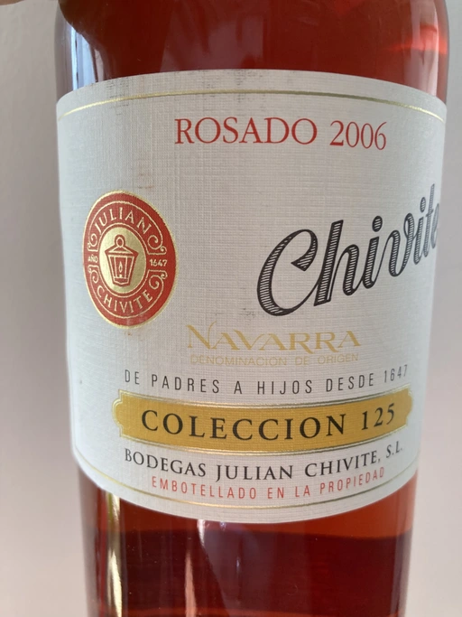
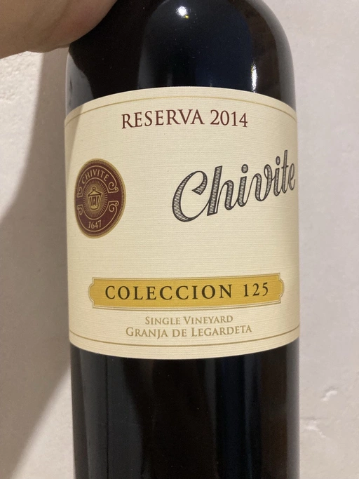
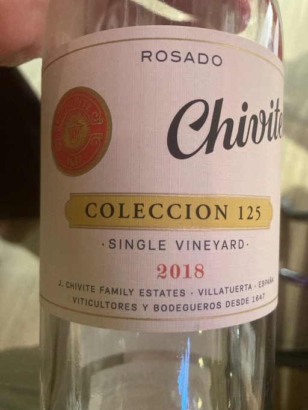
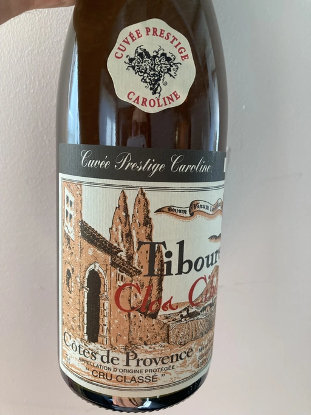
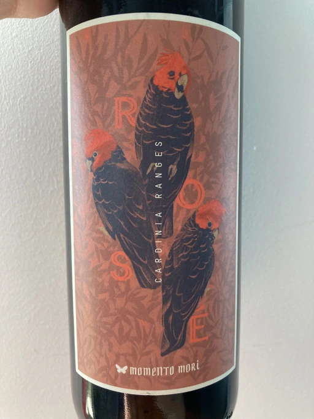
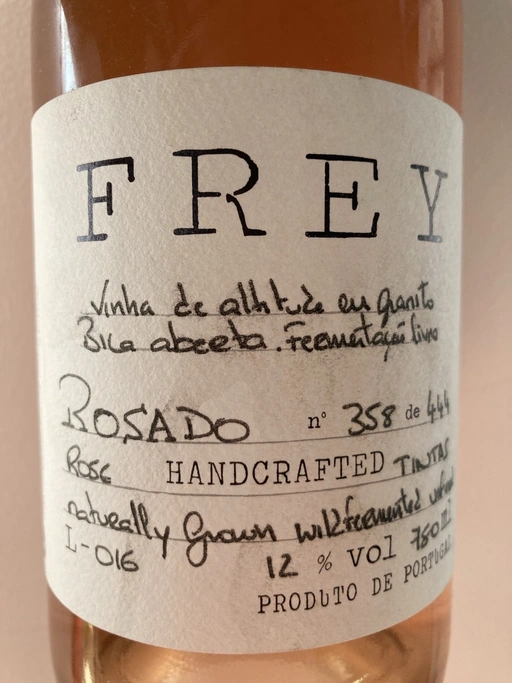
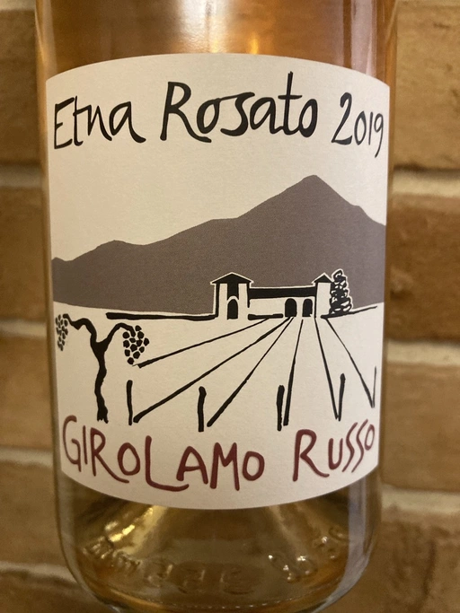

- Type
- Rose Still, Dry
- Producer
- Chivite
- Vintage
- 2006
- Location
- Spain, Navarra DO
- Grapes
- Tempranillo
- Alcohol
- 13.5
- Sugar
- 1.3
- Price
- 1035 UAH
- Cellar
- N/A
Ratings
2021-07-13 - 8.25
It’s not everyday that I drink a 15 years old rosé. That is also in a good shape with potential to age for more years. Old school style, complex and interesting bouquet of caramel, marzipan, apricot, blood orange and fig with some cooked notes. In a blind tasting (sniffing?) I would assume that it has some relation to Madeira wine, but then you taste it and it’s bone dry and not fortified. And the acidity is high. Overall, I love this wine and it feels like a cherry on a cake.
Wine #7 on Rose Petals Party.
Related

Chivite
Coleccion 125 Tinto Reserva - 2014

Chivite
Coleccion 125 Rosado - 2018

Clos Cibonne
Cuvée Prestige Caroline Tibouren Rosé Cru Classé - 2018

Momento Mori
Cardinia Rangers Rosé - 2019

Clos Cibonne
Tentations Rosé - 2019

Frey
Rosado - 2016

Weingut Bründlmayer
Brut Rosé - NV

Girolamo Russo
Etna Rosato - 2019